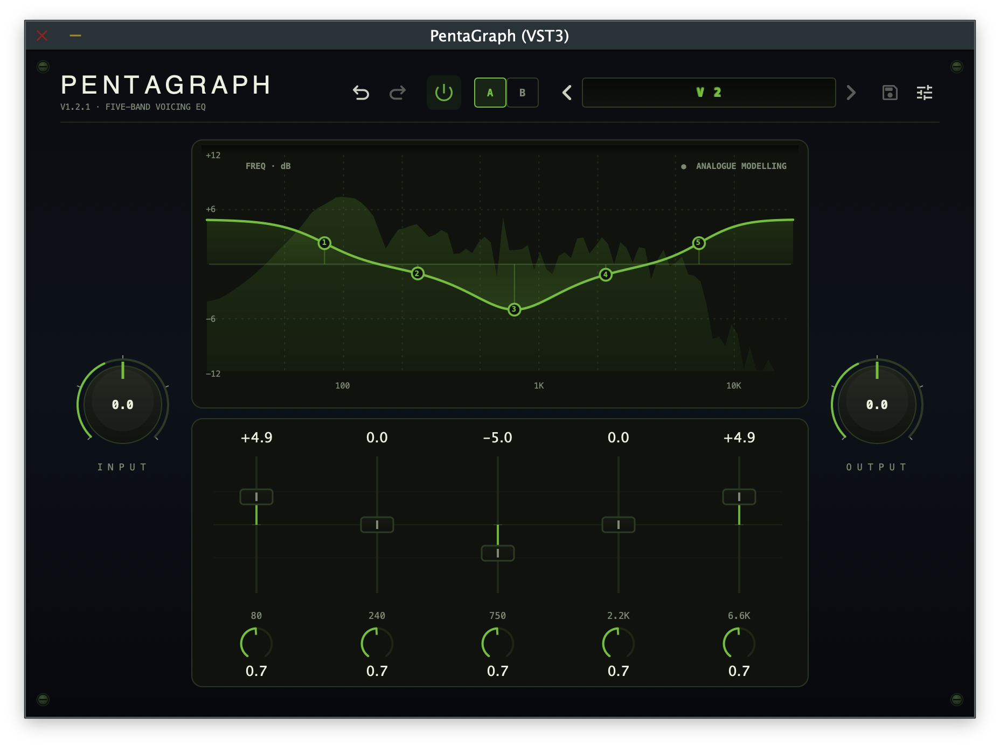

PentaGraph
A studio-grade 5-band graphic EQ plugin — a faithful digital recreation of the classic 5-band graphic EQ circuit found in legendary guitar amplifiers and widely recreated as standalone pedals using op-amp gyrator circuits. Calibrated from real hardware measurements.
- Five fixed bands: 80 Hz · 240 Hz · 750 Hz · 2.2 kHz · 6.6 kHz
- ±12 dB boost/cut per band with input & output trim (unity detent)
- Dual-mode: Nominal (clean textbook EQ) and Analog (hardware-calibrated analog modelling with ADAA saturation)
- 15 factory presets for lead, rhythm, clean, jazz, and more
- VST3, AU & Standalone on macOS · VST3 on Windows

Overview
PentaGraph is a digital recreation of the iconic 5-band graphic EQ circuit found in legendary guitar amplifiers and widely recreated as standalone pedals using op-amp gyrator circuits. Rather than a generic parametric EQ with similar frequency points, PentaGraph was engineered from the ground up to reproduce the topology, interaction, and saturation behaviour of the original analog circuit.
The result is an EQ that feels like the real thing: true band independence, the characteristic "V-curve" scoop, gain-dependent Q narrowing, and subtle op-amp saturation when pushed.
PentaGraph operates in two modes, selectable via the Analog Modeling toggle in the settings (cog) menu:
- Nominal mode (default) — uses the pedal’s published frequency labels (80 / 240 / 750 / 2.2k / 6.6k), uniform Q, and clean textbook filtering with no saturation. Ideal for general-purpose EQ duties.
- Analog mode — uses studio-calibrated centre frequencies, per-band Q values, nonlinear gain mapping, and dual-stage ADAA saturation to faithfully reproduce the real hardware’s response.
Key Features
- Parallel Summing Topology: Each band filters the dry input independently and the contributions are summed — exactly as in the analog circuit's op-amp summing stage. This preserves true band independence, fundamentally different from cascading five peaking biquads in series.
- Dual-Mode Operation: Switch between Nominal (clean, textbook EQ with published frequencies and uniform Q) and Analog (hardware-calibrated frequencies, per-band Q, nonlinear gain mapping, and analog saturation) via the settings menu.
- Hardware-Calibrated Response: All centre frequencies, Q values, and gain mappings were derived from studio measurements of a real 5-band gyrator EQ pedal (48 kHz / 24-bit WAV via MOTU interface, spectral division with 1/6-octave smoothing). Calibration also identified that Band 1 is a low shelf and Band 5 is a high shelf, with Bands 2–4 as wide peaking filters.
- Gain-Dependent Q (Analog Mode): At extreme boost or cut settings, the effective Q narrows smoothly, just like the analog circuit. At ±12 dB the effective Q is ~1.36× the base Q — subtle but musically significant.
- Dual-Stage ADAA Saturation (Analog Mode): Per-band saturation models per-gyrator op-amp headroom, while post-summing saturation models the summing amplifier. Both use first-order Antiderivative Anti-Aliasing with
tanhsoft clipping for alias-free harmonics at the base sample rate. Bypassed entirely at low gain settings for zero overhead. - Pedal-Style Gain Staging: Input and output trims (−40 to +6 dB) with unity detent at 0 dB, so you can place PentaGraph like an FX-loop EQ. Drive the input trim to push the saturation stages for more analog character.
- 15 Factory Presets: From the iconic Classic V scoop to Djent Focus, Jazz Roll-Off, Fuzz Friend, and more — with full user preset management (save, rename, delete).
- Automation-Safe & Efficient: Zero heap allocations on the audio thread, no zipper noise (15–20 ms parameter smoothing), stable across 44.1–192 kHz sample rates, no denormals or NaN propagation.
- Zero-Latency Processing: No latency added to your signal chain. Suitable for tracking, mixing, and live use.
Controls
| Control | Range | Description |
|---|---|---|
| 80 Hz | ±12 dB | Low-end thump and sub control |
| 240 Hz | ±12 dB | Low-mid body and warmth |
| 750 Hz | ±12 dB | Mid focus: the classic scoop frequency |
| 2.2 kHz | ±12 dB | Upper-mid attack and presence |
| 6.6 kHz | ±12 dB | Presence, air, and top-end sparkle |
| Input Trim | −40 to +6 dB | Unity detent at 0 dB; drives saturation when raised |
| Output Trim | −40 to +6 dB | Unity detent at 0 dB; final level control |
| Analog Modeling | On / Off | Cog menu toggle; switches between Nominal and Analog modes. Fully automatable and saved with presets. |
| Bypass | On / Off | Power icon in top nav bar; bypasses EQ (trims remain active) |
Double-click any control to reset it to 0 dB.
Factory Presets
PentaGraph ships with 15 factory presets. All presets leave Input Trim and Output Trim at 0 dB.
| Preset | Description |
|---|---|
| Init | Flat: all bands at 0 dB |
| Classic V | The iconic V-curve: boosted lows and highs, scooped mids |
| Lead | Upper-mid and presence emphasis for cutting lead tones |
| Solo Push | Mid-forward bump for solos that need to cut through a mix |
| Tight Rhythm | Scooped but controlled: tight palm mutes and modern metal rhythm |
| Chunk Rhythm | Mild V-curve with low-end weight for chunky rhythm tones |
| Djent Focus | Aggressive low cut with upper-mid attack for modern djent/prog |
| Bass Contour | Enhanced low end with gentle mid scoop for bass guitar or low tunings |
| Fuzz Friend | Tames low-end mud and adds mid focus for pairing with fuzz pedals |
| Warm Clean | Rounded highs and a touch of low-mid warmth for clean tones |
| Sparkle Clean | Bright and airy clean tone with upper-mid shimmer |
| Acoustic Strum | Reduced boominess with presence lift for acoustic or piezo pickups |
| Jazz Roll-Off | Low and high rolloff with mid focus for warm jazz voicings |
| Fizz Tamer | Subtle presence cut to tame harsh or fizzy high-gain amp sims |
| Bedroom Loudness | Fletcher-Munson-inspired boost for full-sounding low-volume playing |
Plugin Formats & Compatibility
| Format | macOS | Windows |
|---|---|---|
| VST3 | ✓ | ✓ |
| AU (Audio Unit) | ✓ | — |
| Standalone | ✓ | — |
Compatible with any VST3- or AU-compatible DAW including Logic Pro, Ableton Live, Reaper, Studio One, Cubase, FL Studio, and more.
System Requirements
macOS
- macOS 10.13 (High Sierra) or later
- 64-bit Intel or Apple Silicon (Universal Binary — runs natively on both)
- 4 GB RAM (8 GB recommended)
- ~50 MB free disk space
- Screen resolution of 1280 × 720 or higher
Windows
- Windows 10 (version 1903 / build 18362) or later, 64-bit only
- x86-64 (AMD64) processor; ARM64 via emulation
- 4 GB RAM (8 GB recommended)
- ~50 MB free disk space
- Screen resolution of 1280 × 720 or higher
Installation
macOS
The macOS release is a signed and notarised .pkg installer.
- Download
PentaGraph-<version>.pkgfrom the release page. - Double-click the
.pkgfile to launch the installer. - Follow the on-screen prompts. You can choose which components to install:
- VST3 plug-in → installed to
/Library/Audio/Plug-Ins/VST3/ - AU plug-in → installed to
/Library/Audio/Plug-Ins/Components/ - Factory Presets → installed to
/Library/Application Support/Nullform Audio/PentaGraph/Presets/Factory/
- VST3 plug-in → installed to
- Open your DAW and scan for new plug-ins. PentaGraph will appear under Nullform Audio.
Windows
The Windows release is an Inno Setup .exe installer.
- Download
PentaGraph-<version>-Windows.exefrom the release page. - Run the installer. If Windows SmartScreen appears, click More info → Run anyway.
- Choose the installation type:
- Full — VST3 plug-in + Factory Presets
- VST3 only — plug-in without presets
- Custom — choose individually
- Open your DAW and scan for new plug-ins.